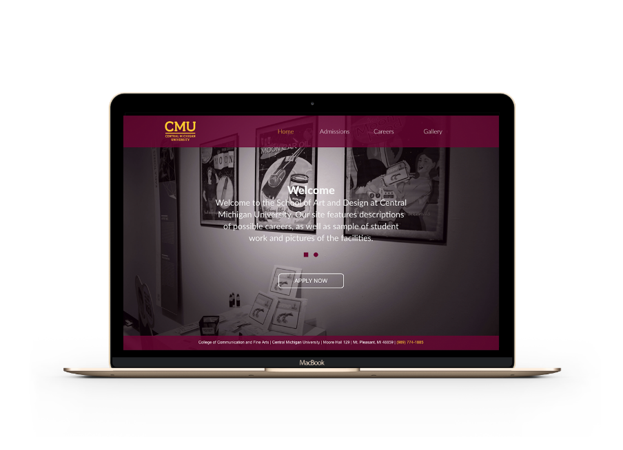
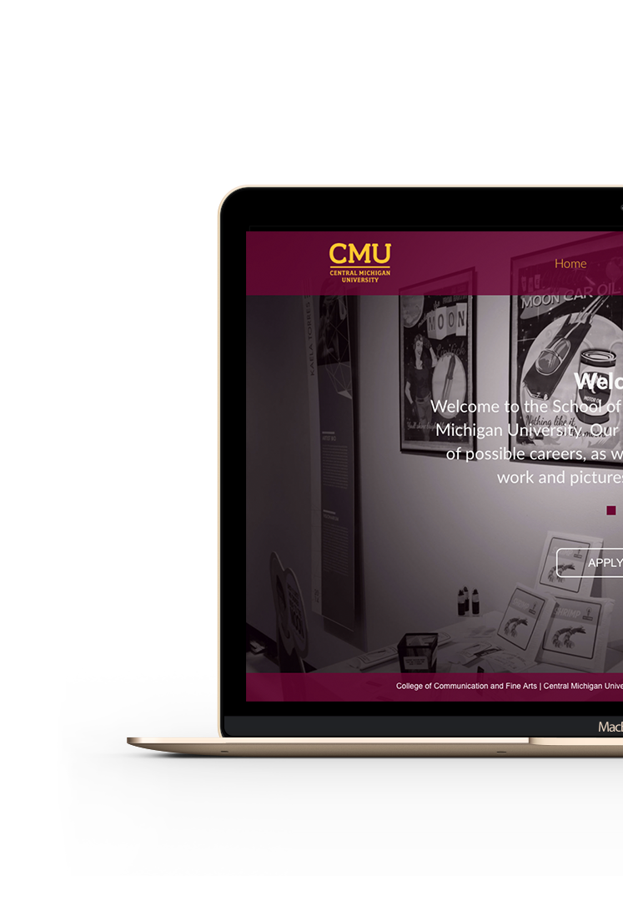

The idea is to develop a design that showcases Central Michigan University’s art department. The challenge was to recreate the existing website with one that would create an inviting environment for current and future students. I approached the design with the understanding that usability is the top priority as well as abiding to the university’s color scheme.

PRIMARY COLORS
#6A0032
#FFC82E
SECONDARY COLORS
#FFF

BRAND IDENTITY
Guidelines
BRAND IDENTITY
Guidelines
Utilizing color schemes from the Central Michigan University’s branding, I designed the pages to include similar content as the existing website with some re-prioritization.